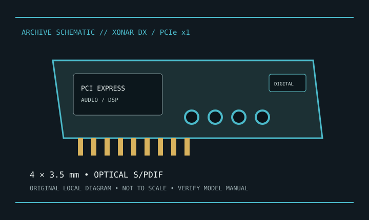

[ INDIVIDUAL COMPONENT // SOUND HARDWARE ]
ASUS Xonar DX
Xonar DX is ASUS’s PCI Express x1 7.1-channel sound card. This is not Xonar D1 (conventional PCI) or Xonar AE.

Model-specific specifications
| Product | ASUS Xonar DX; use model-specific manual, not Xonar D1 documentation. |
|---|---|
| Bus | PCI Express x1; ASUS documents a low-profile bracket option and auxiliary power connection. |
| I/O | Four 3.5 mm analog output jacks for 7.1 use, analog input/microphone connections, and optical S/PDIF output; consult manual for exact jack assignment/adapters. |
| Conversion | ASUS lists 24-bit/192 kHz playback and 116 dB SNR for Xonar DX; these are manufacturer ratings. |
| Software | ASUS support/download page has DX-specific drivers; supported Windows releases vary by package. No current macOS/Linux vendor support is assumed. |
| Power | Follow auxiliary-power instructions. Analog mic input is not an XLR/48 V preamp. |
Compatibility & preservation
Check PCIe slot clearance, auxiliary power, bracket height, and the actual accessory set. Preserve original driver/control panel and use its jack map; digital output/routing behavior depends on driver version.
- Photograph the model/revision label, connector panel, and installed/bundled accessories before service.
- Retain manufacturer manuals, original driver/firmware packages, and known-working configuration notes with the hardware.
- Use the specified signal level, connector wiring, and power requirements; connector fit alone does not prove compatibility.
Manufacturer sources
- ASUS — Xonar DXManufacturer product specifications.
- ASUS Support — Xonar DX downloadsManufacturer manuals and model-specific drivers; check OS/revision applicability.